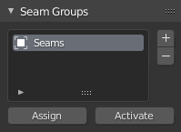

Seam Groups
Info
ZenUV 3 Support Status
We would like to inform you that the documentation available on this web page pertains exclusively to Zen UV 3.
ZenUV 3 Support Notice
Please be advised that active development and technical support for ZenUV 3 have officially concluded. This version is fully compatible with Blender up to version 5.0.
We understand that many of you rely on ZenUV for your professional workflows, and we sincerely apologize for any inconvenience this transition may cause. While we have always strived to provide long-term value, the one-time fixed price paid for ZenUV 3 is no longer sufficient to cover the extensive amount of work required to maintain compatibility with the rapidly changing architecture of newer Blender versions. To ensure the project remains sustainable and continues to meet high standards, we must focus our resources on the next generation of the addon.
Discover ZenUV 5
To take full advantage of the latest advancements in Blender and UV mapping technology, we strongly recommend upgrading to ZenUV 5.
Panel

Add
Add a new Seam Group to the list.
Delete
Delete the selected Seam Group from the list.
Assign
Assign Seams to selected Seam Group.
Activate
Set Seams from selected Seam Group to selected mesh.